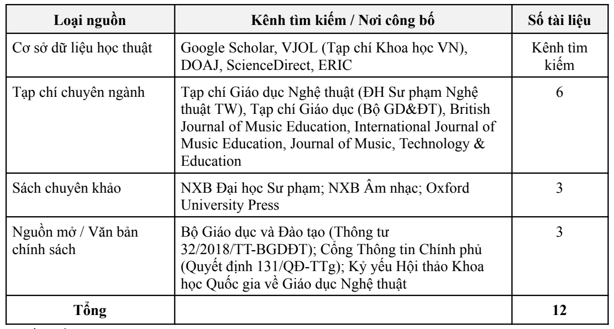
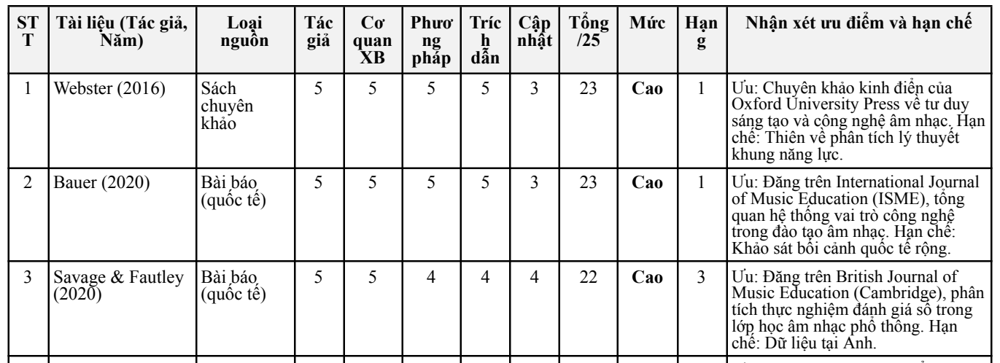

aMục tiêu bài tập
Yêu cầu
Tìm kiếm thông tin học thuật bằng các toán tử tìm kiếm nâng cao, sau đó đánh giá độ tin cậy, tính chính xác và mức độ phù hợp của các nguồn tìm được.
Chủ đề mình chọn
Tìm kiếm và đánh giá độ tin cậy của các nguồn học thuật về ứng dụng công nghệ số và trí tuệ nhân tạo trong đổi mới phương pháp dạy học âm nhạc tại trường phổ thông. Lý do: Chương trình GDPT 2018 môn Âm nhạc và Đề án chuyển đổi số giáo dục đặt yêu cầu giáo viên âm nhạc phải biết chọn công cụ số phù hợp cho từng phân môn (Hát, Nhạc cụ, Đọc nhạc, Lý thuyết và Thường thức âm nhạc). Mục tiêu là chọn được nguồn dùng được khi chuẩn bị bài giảng và biết giới hạn của từng nguồn.
Phạm vi tìm kiếm
- Nội dung: phần mềm ký âm (MuseScore, Sibelius), xử lý âm thanh (Audacity, GarageBand), AI nhận diện cao độ, nhịp điệu và phản hồi tự động
- Đối tượng: học sinh tiểu học, THCS và sinh viên Sư phạm Âm nhạc
- Thời gian: ưu tiên công bố 2016–2026, kèm một số tài liệu lý luận nền tảng
- Ngôn ngữ: tiếng Việt và tiếng Anh
Kỹ năng được rèn luyện
- Xác định từ khóa song ngữ và xây dựng câu truy vấn
- Dùng toán tử nâng cao: cụm từ trong ngoặc kép,
AND,OR - Sàng lọc nguồn theo thông tin xuất bản, DOI, cơ quan ban hành
- Đánh giá nguồn theo bộ tiêu chí có thang điểm rõ ràng
bTóm tắt quá trình thực hiện
Các bước thực hiện
- Xác định chủ đề và phạm vi theo 4 chiều: nội dung, đối tượng, thời gian, ngôn ngữ (mục a).
- Xây dựng truy vấn song ngữ: dùng ngoặc kép để giữ nguyên cụm từ,
ANDnối hai nhóm khái niệm,ORmở rộng các từ đồng nghĩa trong cùng nhóm. - Tìm theo kênh học thuật: Google Scholar, VJOL, DOAJ, ScienceDirect, ERIC; tạp chí chuyên ngành; sách chuyên khảo; văn bản của cơ quan quản lý giáo dục.
- Sàng lọc: từ hơn 20 ứng viên ban đầu, đối chiếu thông tin xuất bản, DOI (nếu có), cơ quan ban hành; loại blog cá nhân và bài thiếu căn cứ → còn 12 nguồn.
- Chấm độ tin cậy từng nguồn theo 5 tiêu chí, mỗi tiêu chí 1–5 điểm, rồi xếp hạng và ghi ưu điểm, hạn chế.
- Tổng hợp phát hiện và rút ra cách vận dụng vào dạy học âm nhạc; lập danh mục tài liệu tham khảo.
Công cụ đã sử dụng
| Công cụ | Dùng để làm gì | Vì sao chọn |
|---|---|---|
| Google Scholar | Tìm bài báo, sách học thuật; xem số trích dẫn | Bao phủ rộng cả tiếng Việt và tiếng Anh, có chỉ số trích dẫn |
| VJOL, DOAJ | Tìm tạp chí khoa học Việt Nam và tạp chí truy cập mở | Nguồn trong nước có phản biện, truy cập miễn phí |
| ScienceDirect, ERIC | Tìm nghiên cứu quốc tế về giáo dục và công nghệ | Cơ sở dữ liệu chuyên về khoa học và giáo dục |
| Cổng thông tin Bộ GD&ĐT, Chính phủ | Tra văn bản chính sách gốc (Thông tư 32/2018, Quyết định 131/QĐ-TTg) | Nguồn ban hành chính thức |
| Google Docs | Soạn báo cáo, bảng chấm điểm và xuất PDF | Dễ chỉnh sửa, lưu trên đám mây |
Ghi nhận sử dụng AI
Báo cáo bài này không ghi nhận sử dụng công cụ AI: việc tìm kiếm, sàng lọc và chấm điểm nguồn do mình tự thực hiện.
Khó khăn và cách giải quyết
| Khó khăn gặp phải | Cách giải quyết |
|---|---|
| Kết quả ban đầu nhiều (hơn 20 ứng viên), lẫn blog cá nhân và bài thiếu căn cứ. | Đối chiếu thông tin xuất bản, DOI và cơ quan ban hành; chỉ giữ tạp chí có phản biện, sách của nhà xuất bản uy tín và văn bản chính thức. |
| Mỗi nguồn mạnh ở một mặt (sách nền tảng thì cũ, bài mới thì mẫu nhỏ) nên khó so sánh cảm tính. | Dùng chung một thang 5 tiêu chí × 5 điểm cho tất cả nguồn và ghi rõ hạn chế của từng nguồn. |
| Một số nghiên cứu có đối tượng khác bối cảnh phổ thông Việt Nam (sư phạm mầm non, học sinh ở Anh, riêng môn Guitar). | Ghi rõ giới hạn đối tượng trong cột hạn chế, khi vận dụng thì cân nhắc theo lứa tuổi và mục tiêu tiết học. |
Bài học rút ra
Mình học được cách đặt truy vấn có toán tử, sàng lọc và chấm độ tin cậy của nguồn theo cùng một thang điểm thay vì chọn theo cảm tính. Khi đưa tư liệu vào bài giảng âm nhạc, cần xem đối tượng nghiên cứu của từng nguồn và chọn công cụ theo mục tiêu học tập của học sinh. Khi rà lại, mình cũng thấy cần cộng kiểm tra số liệu tổng hợp trước khi nộp.
cSản phẩm cuối cùng
Các truy vấn đã dùng, phân bố nguồn, thang đánh giá, bảng xếp hạng 12 nguồn và phát hiện chính.
Các truy vấn và toán tử đã dùng
| Truy vấn | Toán tử | Mục đích |
|---|---|---|
"dạy học âm nhạc" AND ("công nghệ thông tin" OR "chuyển đổi số" OR "phần mềm") | Ngoặc kép, AND, OR | Tìm nguồn tiếng Việt về công nghệ trong dạy học âm nhạc |
"music education" AND ("digital technology" OR "artificial intelligence" OR "automated feedback") | Ngoặc kép, AND, OR | Tìm nghiên cứu quốc tế về công nghệ số, AI và phản hồi tự động |
"pedagogy" AND "interactive music systems" | Ngoặc kép, AND | Thu hẹp vào hệ thống âm nhạc tương tác dùng trong sư phạm |


Thang đánh giá độ tin cậy
Mỗi nguồn được chấm 1–5 điểm cho từng tiêu chí, tối đa 25 điểm. Cao 20–25 · Khá 15–19 · Thấp dưới 15.
| Tiêu chí | Nội dung đánh giá |
|---|---|
| 1. Uy tín tác giả | Chuyên môn, học hàm học vị, đơn vị công tác hoặc thẩm quyền ban hành |
| 2. Cơ quan xuất bản | Uy tín nhà xuất bản, tạp chí có phản biện, cơ quan quản lý nhà nước |
| 3. Phương pháp | Thiết kế nghiên cứu, quy mô mẫu, cách thu thập dữ liệu hoặc tính hệ thống của lý luận |
| 4. Trích dẫn và ảnh hưởng | Số trích dẫn trên Google Scholar, có trong Scopus/Web of Science/VJOL, sự công nhận trong ngành |
| 5. Tính cập nhật | Phù hợp với phát triển gần đây của công nghệ AI, có xét giá trị của tài liệu kinh điển |
Bảng đánh giá và xếp hạng 12 nguồn
Kết quả: 6 nguồn mức Cao (50%), 5 nguồn mức Khá (41,7%), 1 nguồn mức Thấp (8,3%). Điểm thành phần ghi theo thứ tự: tác giả · xuất bản · phương pháp · trích dẫn · cập nhật.
| Hạng | Nguồn | Loại | Điểm thành phần | Tổng | Mức | Ưu điểm / hạn chế |
|---|---|---|---|---|---|---|
| 1 | Webster (2016) | Sách chuyên khảo | 5 · 5 · 5 · 5 · 3 | 23 | Cao | Chuyên khảo của Oxford University Press về tư duy sáng tạo và công nghệ âm nhạc / thiên về lý thuyết |
| 1 | Bauer (2020) | Bài báo quốc tế | 5 · 5 · 5 · 5 · 3 | 23 | Cao | Tổng quan vai trò công nghệ trong đào tạo âm nhạc / bối cảnh quốc tế rộng |
| 3 | Savage & Fautley (2020) | Bài báo quốc tế | 5 · 5 · 4 · 4 · 4 | 22 | Cao | Dữ liệu thực nghiệm về đánh giá số trong lớp âm nhạc / mẫu nghiên cứu ở Anh |
| 4 | Bộ GD&ĐT (2018) | Văn bản chính sách | 5 · 5 · 4 · 4 · 3 | 21 | Cao | Căn cứ yêu cầu chương trình Âm nhạc phổ thông / không có dữ liệu thực nghiệm |
| 4 | Thủ tướng Chính phủ (2022) | Văn bản chính sách | 5 · 5 · 3 · 4 · 4 | 21 | Cao | Định hướng chuyển đổi số giáo dục quốc gia / ít chi tiết cho từng phân môn |
| 6 | Trần Thị Thu Hà (2023) | Bài báo trong nước | 4 · 4 · 4 · 3 · 5 | 20 | Cao | Sát thực tiễn dạy học âm nhạc theo CT GDPT 2018 / phạm vi khảo sát hẹp |
| 7 | Lê Anh Tuấn (2019) | Sách chuyên khảo | 5 · 4 · 4 · 4 · 2 | 19 | Khá | Dạy học âm nhạc phát triển năng lực / nội dung về AI còn ít |
| 7 | Galanis & May (2023) | Bài báo quốc tế | 4 · 4 · 4 · 3 · 4 | 19 | Khá | Thực nghiệm AI phản hồi tự động khi luyện nhạc cụ / quy mô thử nghiệm vừa |
| 9 | Phạm Phương Hoa (2021) | Bài báo trong nước | 4 · 4 · 4 · 3 · 3 | 18 | Khá | Minh họa MuseScore, Audacity / đối tượng là sư phạm mầm non |
| 9 | Nguyễn Thị Mai Lan (2022) | Bài báo trong nước | 4 · 4 · 3 · 3 · 4 | 18 | Khá | Dùng học liệu trên nền tảng số / chủ yếu về Guitar |
| 11 | Đào Ngọc Dung (2016) | Sách chuyên khảo | 4 · 4 · 4 · 4 · 1 | 17 | Khá | Nền tảng phân tích tác phẩm / chưa đề cập chuyển đổi số |
| 12 | Vũ Thị Mai Hương (2022) | Kỷ yếu hội thảo | 3 · 3 · 3 · 2 · 3 | 14 | Thấp | Ví dụ triển khai MuseScore tại THCS / phương pháp đơn giản, ít trích dẫn |
Tổng 12 dòng là 235 điểm, trung bình 19,6/25 (bản PDF ghi 19,4/25).


Phát hiện và hướng vận dụng vào dạy học
Ký âm kết hợp nghe và nhìn
Tính năng phát lại của MuseScore, Sibelius giúp học sinh liên hệ ký hiệu với cao độ, trường độ, tiết tấu và bớt e ngại nhạc lý (Bauer, 2020; Trần Thị Thu Hà, 2023; Lê Anh Tuấn, 2019).
AI phản hồi khi luyện tập
Hệ thống AI phân tích âm thanh, chỉ ra sai lệch cao độ khi luyện hát hoặc nhạc cụ để học sinh tự sửa ở nhà, sau đó đối chiếu với nhận xét của giáo viên (Galanis & May, 2023; Savage & Fautley, 2020).
Giáo viên vẫn là trung tâm
Công nghệ chỉ là công cụ; giáo viên chọn công cụ, dẫn dắt cảm thụ và tạo cơ hội cho học sinh tự thể hiện (Webster, 2016; Bộ GD&ĐT, 2018).
Tài liệu tham khảo
Tiếng Việt
- Bộ Giáo dục và Đào tạo (2018) Chương trình Giáo dục phổ thông môn Âm nhạc (Ban hành kèm theo Thông tư số 32/2018/TT-BGDĐT ngày 26/12/2018). Hà Nội.
- Đào Ngọc Dung (2016) Phân tích tác phẩm âm nhạc và phương pháp tiếp cận trong sư phạm nghệ thuật. Hà Nội: NXB Âm nhạc.
- Trần Thị Thu Hà (2023) ‘Đổi mới phương pháp dạy học âm nhạc ở trường phổ thông đáp ứng yêu cầu Chương trình Giáo dục phổ thông 2018’, Tạp chí Giáo dục Nghệ thuật, (35), tr. 28–34.
- Phạm Phương Hoa (2021) ‘Ứng dụng công nghệ thông tin trong dạy học âm nhạc cho sinh viên ngành Giáo dục mầm non: Nghiên cứu trường hợp tại Trường Đại học Giáo dục - Đại học Quốc gia Hà Nội’, Tạp chí Giáo dục, 511(1), tr. 45–49.
- Vũ Thị Mai Hương (2022) ‘Thực trạng và giải pháp ứng dụng phần mềm MuseScore trong dạy học phân môn Đọc nhạc tại các trường trung học cơ sở’, Kỷ yếu Hội thảo Khoa học Quốc gia về Đổi mới Giáo dục Nghệ thuật, tr. 145–152.
- Nguyễn Thị Mai Lan (2022) ‘Khai thác và sử dụng nội dung trên các nền tảng số vào giảng dạy học phần “Guitar” cho sinh viên Sư phạm Âm nhạc: Thực trạng và giải pháp’, Tạp chí Giáo dục, Số đặc biệt tháng 5/2022, tr. 182–187.
- Thủ tướng Chính phủ (2022) Quyết định số 131/QĐ-TTg ngày 25/01/2022 phê duyệt Đề án “Tăng cường ứng dụng công nghệ thông tin và chuyển đổi số trong giáo dục và đào tạo giai đoạn 2022 - 2025, định hướng đến năm 2030”. Hà Nội.
- Lê Anh Tuấn (2019) Phương pháp dạy học Âm nhạc ở trường phổ thông theo định hướng phát triển năng lực học sinh. Hà Nội: NXB Đại học Sư phạm.
Tiếng nước ngoài
- Bauer, W. I. (2020) ‘Music learning and technology’, International Journal of Music Education, 38(4), pp. 589–602. doi: 10.1177/0255761420932688.
- Galanis, N. & May, L. (2023) ‘Artificial intelligence and automated feedback systems in instrumental music training: A pedagogical evaluation’, Journal of Music, Technology & Education, 16(1), pp. 55–73. doi: 10.1386/jmte_00078_1.
- Savage, E. & Fautley, M. (2020) ‘Digital technology and assessment in the secondary school music classroom: Challenges and pedagogical opportunities’, British Journal of Music Education, 37(3), pp. 215–228. doi: 10.1017/S026505172000015X.
- Webster, P. R. (2016) ‘Creative thinking in music: Advancing a model for education and technology’, in McPherson, G. E. (ed.) The Oxford Handbook of Music Education, Volume 2. Oxford: Oxford University Press, pp. 245–261.
Báo cáo bài tập
Bản PDF xuất từ Google Docs, gồm báo cáo, bảng chấm điểm và danh mục tài liệu tham khảo.